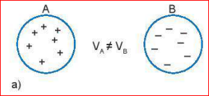
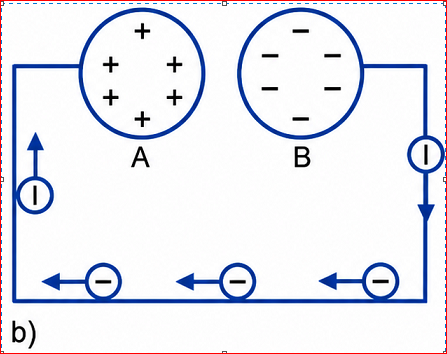
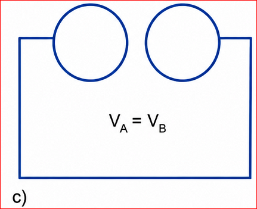
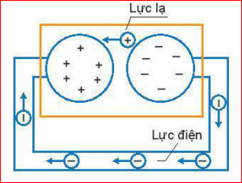
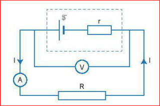
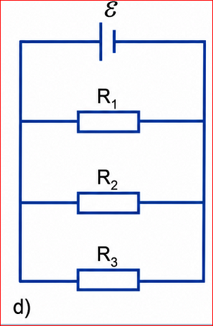
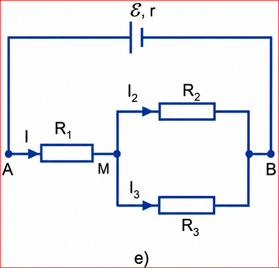

Chương IV - Dòng điện. Mạch điện
Giả sử có hai quả cầu kim loại A và B giống nhau, quả cầu A mang điện tích +q và quả cầu B mang điện tích -q. Giữa quả cầu A và B có một hiệu điện thế \( V_A \neq V_B \)

Hình 24.1a

Hình 24.1b

Hình 24.1c
? Câu hỏi thảo luận (Trang 102)
1. Tại sao dòng điện trong trường hợp mô tả ở Hình 24.1 chỉ tồn tại trong khoảng thời gian rất ngắn?
2. Làm thế nào để duy trì dòng điện trong trường hợp này lâu dài?
Lời giải:
1. Vì khi các điện tích dịch chuyển, hiệu điện thế giữa hai quả cầu giảm nhanh về 0 (\( V_A = V_B \)). Khi không còn sự chênh lệch điện thế, lực điện không còn để đẩy các electron.
2. Để duy trì dòng điện lâu dài, cần một thiết bị (nguồn điện) liên tục thực hiện công để tách và đưa các điện tích trở lại hai cực, duy trì hiệu điện thế ổn định.
Nguồn điện là thiết bị để tạo ra và duy trì hiệu điện thế, nhằm duy trì dòng điện trong mạch. Mỗi nguồn điện đều có hai cực là cực dương (+) và cực âm (-).
Hình 24.2. Kí hiệu nguồn điện
Suất điện động \(\mathscr{E}\) của nguồn điện là đại lượng đặc trưng cho khả năng thực hiện công của nguồn điện:
Đơn vị của suất điện động là vôn (V).

Hình 24.3. Sự di chuyển của điện tích bên trong nguồn
Nguồn điện cũng là một vật dẫn và có điện trở, gọi là điện trở trong (r) của nguồn. Mỗi nguồn điện đặc trưng bằng suất điện động \(\mathscr{E}\) và điện trở trong \(r\).

Hình 24.4. Điện trở trong r trong sơ đồ mạch điện
Theo định luật bảo toàn năng lượng, công của nguồn điện cung cấp bằng tổng nhiệt lượng tỏa ra trên toàn mạch:
\[ I = \frac{\mathscr{E}}{R + r} \]
Cường độ dòng điện chạy trong mạch kín tỉ lệ thuận với suất điện động và tỉ lệ nghịch với điện trở toàn phần.
Hiệu điện thế mạch ngoài (giữa hai cực của nguồn):
? Thảo luận (Trang 104)
1. Mô tả ảnh hưởng của r lên U khi dòng điện tăng?
2. Khi nào thì \( U = \mathscr{E} \)?
1. Khi I tăng, độ giảm thế \(Ir\) tăng, dẫn đến hiệu điện thế mạch ngoài \(U\) giảm xuống.
2. Khi mạch hở (\(I = 0\)) hoặc khi điện trở trong không đáng kể (\(r = 0\)).
Bài 1: Cho mạch điện Hình 24.5. \(\mathscr{E} = 10V\), \(r = 0\). \(R_1 = 20\Omega, R_2 = 40\Omega, R_3 = 50\Omega\). Tính cường độ mạch chính.

Vì bỏ qua \(r\), hiệu điện thế hai đầu các điện trở mắc song song bằng \(\mathscr{E}\).
\( I_1 = U/R_1 = 10/20 = 0,5A \)
\( I_2 = 10/40 = 0,25A \); \( I_3 = 10/50 = 0,2A \)
\( I = I_1 + I_2 + I_3 = 0,5 + 0,25 + 0,2 = 0,95A \).
Bài 2: Cho mạch Hình 24.6. \(\mathscr{E} = 12V, r = 0,6\Omega\). \(R_1 = 3\Omega, R_2 = 4\Omega, R_3 = 6\Omega\).

\( R_{23} = (4 \times 6)/(4+6) = 2,4\Omega \)
\( R_{AB} = R_1 + R_{23} = 3 + 2,4 = 5,4\Omega \)
Cường độ mạch chính: \( I = \mathscr{E}/(R_{AB} + r) = 12/(5,4 + 0,6) = 2A \).
\( U_1 = I \times R_1 = 2 \times 3 = 6V \).
\( U_{23} = U_2 = U_3 = I \times R_{23} = 2 \times 2,4 = 4,8V \).
\( I_2 = 4,8/4 = 1,2A \); \( I_3 = 4,8/6 = 0,8A \).
Câu 1: Đại lượng nào đặc trưng cho khả năng thực hiện công của nguồn điện?
Câu 2: Đơn vị của suất điện động là:
Câu 3: Công thức định luật Ôm cho toàn mạch là:
Câu 4: Hiện tượng đoản mạch xảy ra khi:
Câu 5: Số vôn ghi trên nguồn điện cho biết giá trị nào khi mạch hở?
Mô tả ảnh hưởng của điện trở trong lên hiệu điện thế hai cực. Xác định được suất điện động của các loại pin khác nhau.